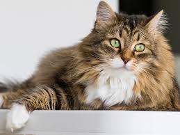
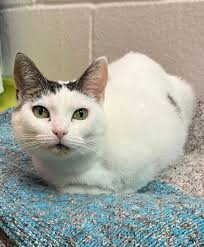

Featured Cats

Fluffy

Whiskers

Mittens
All about adorable cats!
Cats are small, carnivorous mammals that have been domesticated for thousands of years. They are known for their agility, independence, and playful nature. With sharp retractable claws, keen senses, and a strong hunting instinct, cats are skilled predators, often chasing mice, birds, and insects. Domesticated cats come in various breeds, each with unique fur patterns, colors, and temperaments. They communicate through vocalizations like meowing and purring, as well as body language. Cats are popular pets due to their affectionate yet independent nature, and they require minimal care compared to other animals. They are also known to form strong bonds with their owners and can live up to 15–20 years with proper care.
Fluffy
Whiskers
Mittens